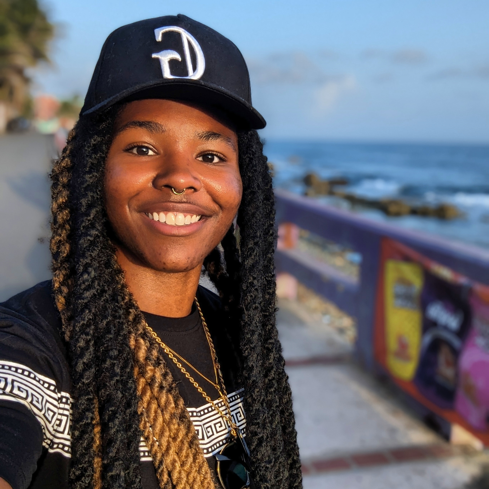
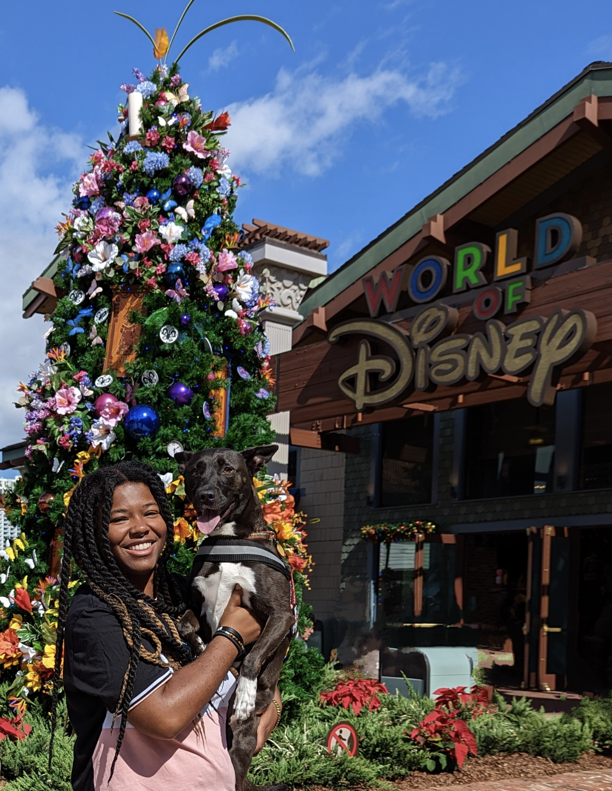

Get to know me
Design leader who turns ambiguity into clarity - and clarity into products people trust.

Enjoying some well needed Vitamin Sea in Puerto Rico
My story
I am a Biomedical Engineer by trade. You may think… "How does an engineer switch to UX?"
Biomedical Engineering is the study of how physical devices and systems best serve end users - it's fully rooted in design thinking and iterative prototyping. In my program, I found my real passion: exceeding users' needs.
I started my career as a Materials Product Engineer at Kimberly-Clark, then made an internal move into UX - becoming the UX Digital Product Developer for Kimberly-Clark Professional, where I did a combination of UX design, sprint planning, engineering, and QA. That hybrid foundation is still how I design today: systems-oriented, evidence-driven, and comfortable operating at the intersection of design and engineering.
"I'm the unicorn you never knew you needed."
I'm a Campaigner (ENFP-A) - passionate, energetic, and deeply people-focused. I'm known for resolving organizational ambiguity through rigorous, cross-functional research, and equally for leadership that extends beyond individual contribution - mentoring, developing, and building team capability. Want the specifics? See my full experience and leadership work.
What I bring
I've planned and conducted structured research studies spanning as many as 8 participants across 6 cross-functional teams to resolve genuine organizational disagreements - not just user interviews, but the kind of research that changes a roadmap.
Sole designer for two publicly launched AI product suites. I insist on traceability, explainability, and user control in every AI feature - and I've caught real technical shortcuts that threatened to undermine those principles before they reached production.
From facilitating workshops with engineering and product leadership to building a comprehensive scope analysis that drove a data-grounded decision when a project was drifting - I lead through rigor, not just influence.
Kind words
Great job on the presentation! This was better than a lot of the presentations we saw at a recent AI conference.
VP of UX · Precisely
Thank you for compiling this, for running the interviews. I personally learned a lot from this.
UX Team Manager (live research readout feedback) · Precisely
Fantastic presentation at the UX Summit around prototyping - lots of great insights to keep our team efficient and effective in the designing phase of our process.
Director of UX · Precisely
I'm super impressed with the way you're navigating this feature with all the pressure and mixed information.
UX Designer, Team Member (mid-project feedback) · Precisely
We used to describe different skills as superpowers. I definitely think the storytelling and presentation stuff is your superpower.
VP of R&D · Precisely
I feel like you were able to convey or imply some of those things but without it sounding like pointing blame or anything - seriously, I was impressed.
UX Designer, Team Member (presentation feedback) · Precisely
"It is no exaggeration to say you played the biggest role in making this experience as much of a success as it is... I was genuinely flabbergasted by the fact that this was your first ever mentoring role... You are the best mentor I could have ever prayed for."
Former Intern · Precisely
My toolkit
Outside of work
Art is my passion. You can find me doing anything from painting, to photographing wedding engagement photos, to filming documentaries in French, to experimenting in the kitchen, to playing ukulele…. (the list goes on & on).
When I'm not working, I am enjoying time with my pups! We enjoy travelling together, meeting new people and experiencing different cultures. I'm also into weightlifting, boxing and hiking.
Eccentric, energetic, and always curious - exactly what I bring to a design team too.

Took my son, Wakanda, to Disney; he loved it!